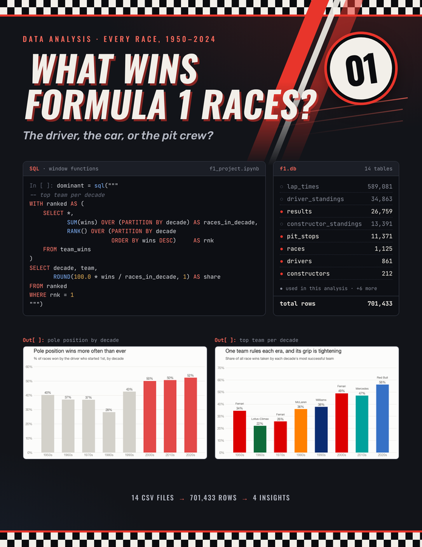

Sports Analytics
What Wins Formula 1 Races?
Turned 14 raw CSV files covering every F1 race since 1950 into a SQLite database, then used SQL and Python to test whether the driver, the car, or the pit crew decides who wins.
- SQL
- SQLite
- Python
- Pandas
- Statistics
- Data Visualization